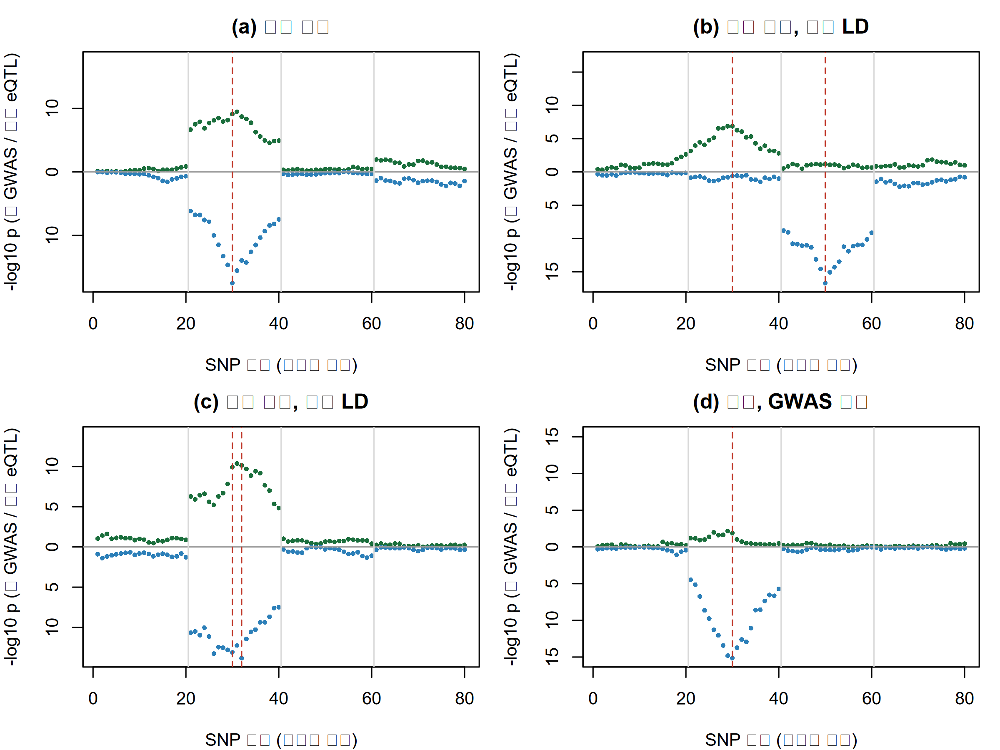
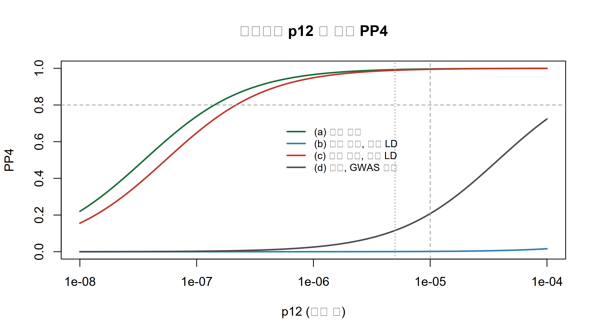

질환 GWAS 신호와 eQTL 신호가 같은 인과 변이에서 나오는지를 coloc의 다섯 가설과 사후확률 PP4로 판단하고, PP4가 틀린 답을 주는 상황을 직접 만들어 봅니다.
Author
Eunji Ha
Published
September 21, 2026
학습 목표
coloc의 다섯 가설(H0~H4)과 그 밑에 깔린 단일 인과 변이 가정을 설명할 수 있다.
SNP 단위 사전확률 p1, p2, p12가 가설 단위 사전확률로 어떻게 바뀌는지 계산할 수 있다.
W9의 근사 베이즈 인자로 PP0~PP4를 로그 공간에서 계산하는 함수를 base R로 구현할 수 있다.
강한 LD, 검정력 부족, 여러 인과 변이, 사전확률 선택 때문에 PP4가 틀린 답을 주는 상황을 시뮬레이션으로 만들고 해석할 수 있다.
어떤 자가면역 질환의 GWAS에서 유전자 G 근처에 유의한 신호가 나왔다고 합시다. 리드 SNP는 비암호화 영역에 있어서 이 변이가 무슨 일을 하는지 알 수 없습니다. 마침 공개 eQTL 자료에서 같은 영역에 G의 cis-eQTL(cis expression quantitative trait locus, 가까운 변이가 유전자 발현을 바꾸는 좌위)이 보입니다. 두 연관 그림을 위아래로 겹쳐 보니 봉우리가 같은 자리에 솟아 있습니다. “이 변이가 G의 발현을 바꿔서 질환 위험을 올린다”는 이야기를 쓰고 싶어집니다.
그런데 봉우리가 겹친다는 것은 증거가 아닙니다. 연관 불균형(linkage disequilibrium, LD) 때문에 인과 변이 하나가 주변 수십 개 SNP의 신호를 함께 끌어올리므로, 서로 다른 두 인과 변이라도 LD로 묶여 있으면 봉우리는 거의 같은 자리에 섭니다. 이번 주의 질문은 두 신호가 같은 인과 변이에서 나오는가, 가까이 있는 서로 다른 변이에서 나오는가입니다. 공동위치 분석(colocalization)은 이 질문에 가설 다섯 개의 사후확률로 답합니다. 재료는 W9에서 만든 근사 베이즈 인자 그대로이고, 새로 필요한 것은 두 형질의 인과 변이 배치를 세는 방법뿐입니다.
다섯 가지 가설
이번 주 내내 형질1 = 질환 GWAS, 형질2 = 유전자 G의 eQTL로 고정합니다. 분석 단위는 SNP \(Q\)개가 있는 한 영역이고, coloc(Giambartolomei et al. 2014)은 형질마다 영역 안에 인과 변이가 최대 1개라고 가정합니다. 그러면 가능한 상태는 다섯 가지입니다.
가설
형질1 (GWAS)
형질2 (eQTL)
인과 변이 배치
H0
연관 없음
연관 없음
없음
H1
연관
연관 없음
형질1에만 변이 \(j\)
H2
연관 없음
연관
형질2에만 변이 \(k\)
H3
연관
연관
서로 다른 변이 \(j \neq k\)
H4
연관
연관
같은 변이 \(j = k\)
우리가 원하는 답은 H4이고, 가장 헷갈리는 상대는 H3입니다. H1과 H2는 한쪽 신호가 약해 “둘 다 연관”이라고 말할 근거가 없는 경우를 받아 줍니다. 기본 coloc(coloc.abf())은 LD 행렬을 쓰지 않고 SNP별 주변 요약통계(summary statistics) \(\hat\beta_j\), \(se_j\)만 씁니다.
Tip
coloc은 “두 봉우리가 겹치는가”를 묻지 않습니다. 두 형질의 인과 변이 배치 \((j, k)\) 전체를 놓고 \(j = k\) 쪽에 사후 질량이 얼마나 있는가를 묻습니다. 봉우리가 겹쳐 보여도 질량이 \(j \neq k\) 쪽에 있으면 H3이고, 한쪽 봉우리가 약하면 H1이나 H2입니다.
사전확률: p1, p2, p12
SNP 하나에 대해 \(p_1\)은 형질1에만 인과일 확률, \(p_2\)는 형질2에만 인과일 확률, \(p_{12}\)는 두 형질 모두에 인과일 확률입니다. coloc의 기본값은 \(p_1 = p_2 = 10^{-4}\), \(p_{12} = 10^{-5}\)입니다(Giambartolomei et al. 2014; coloc 패키지 coloc.abf()의 기본 인자). 이 숫자를 번역하면, 형질1의 인과 변이 가운데 형질2에도 인과인 비율이 \(p_{12}/(p_1+p_{12}) \approx 9\%\)라는 믿음입니다. Wallace (2020)는 이 기본값이 공유 쪽으로 너무 관대할 수 있다며 더 보수적인 \(p_{12} = 5\times10^{-6}\) 정도를 제안했습니다(같은 계산으로 약 5%).
SNP 단위 확률을 가설 단위로 바꾸려면 배치 수를 셉니다. H1은 \(Q\)가지, H3은 \(Q(Q-1)\)가지, H4는 \(Q\)가지이므로 사전확률은 \(Qp_1\), \(Qp_2\), \(Q(Q-1)p_1p_2\), \(Qp_{12}\)이고 H0이 나머지입니다. \(Q = 80\)이면 H4:H3의 사전 오즈는 \(p_{12}/((Q-1)p_1p_2) = 1000/79 \approx 12.7\)입니다. 데이터를 보기 전에 이미 H4가 H3보다 13배쯤 유리합니다. 이 오즈가 \(Q\)에 따라 달라진다는 점은 연습문제 2에서 확인합니다.
사후확률: 대각선과 비대각선
GWAS 인과 후보 \(j\)를 가로축, eQTL 인과 후보 \(k\)를 세로축에 놓은 \(Q \times Q\) 격자를 떠올리십시오. 칸 \((j,k)\)의 사후 가중치는 사전확률 × \(\text{ABF}^{(1)}_j\) × \(\text{ABF}^{(2)}_k\)입니다. H4는 대각선 \(Q\)칸의 합(칸마다 사전 \(p_{12}\)), H3은 비대각선 \(Q(Q-1)\)칸의 합(칸마다 사전 \(p_1p_2\))입니다. 기본값에서 대각선 한 칸의 사전 가중치는 비대각선 한 칸의 \(p_{12}/(p_1p_2) = 1000\)배입니다.
SNP 두 개짜리 영역으로 계산해 봅니다. GWAS는 SNP1에 \(\text{ABF} = 10^8\), SNP2에 \(0.1\)을 주고, eQTL은 거꾸로 SNP2에 \(10^8\)을 준다면 대각선 합은 \(10^8\cdot0.1 + 0.1\cdot10^8 = 2\times10^7\), 비대각선 합은 약 \(10^{16}\)입니다. H4 \(\propto 10^{-5}\cdot 2\times10^7 = 200\), H3 \(\propto 10^{-8}\cdot10^{16} = 10^8\)이라 H3이 압도합니다. 그런데 LD가 강해 반대쪽 SNP도 \(10^5\)을 받으면 대각선 합이 \(2\times10^{13}\)으로 커져 H4 \(\propto 2\times10^8\)이 H3을 앞지릅니다. 각 형질이 서로 다른 SNP를 1000배 더 지지하는데도 그렇습니다. 아래 실습 (1)에서 이 세 경우를 코드로 확인합니다.
형질별 단일 변이 PIP를 \(\pi^{(t)}_j = \text{ABF}^{(t)}_j / \sum_i \text{ABF}^{(t)}_i\), 대각선 비율을 \(d = \sum_j \pi^{(1)}_j \pi^{(2)}_j\)라 하면 위 식에서 곧바로 \[
\frac{PP_4}{PP_3} = \frac{p_{12}}{p_1 p_2} \cdot \frac{d}{1-d}, \qquad P(\text{공유 변이} = j \mid H_4, D) = \frac{\text{ABF}^{(1)}_j \text{ABF}^{(2)}_j}{\sum_i \text{ABF}^{(1)}_i \text{ABF}^{(2)}_i}
\] 가 나옵니다. 둘째 식이 H4 하에서 공유 변이의 SNP별 사후확률이고, W9처럼 큰 순서로 누적해 신용집합(credible set)을 만듭니다.
Tip
\(PP_4/PP_3 = 1000 \cdot d/(1-d)\)입니다(기본값). 두 형질의 SNP별 사후분포가 0.1%만 겹쳐도 H4가 H3을 이깁니다. 강한 LD는 두 사후분포를 같은 SNP들 위에 넓게 펼쳐 \(d\)를 키우므로, 인과 변이가 달라도 PP4가 높게 나올 수 있습니다.
실습: base R로 직접 구현
(1) W9의 함수와 coloc_abf_base
log_sum_exp와 log_abf는 W9에서 만든 것과 같은 함수입니다. 챕터마다 따로 렌더되므로 정의를 그대로 다시 적습니다.
log_sum_exp <-function(x) { m <-max(x); m +log(sum(exp(x - m))) } # 수치 안정적인 log(sum(exp(x)))# Wakefield(2009) 근사 베이즈 인자의 로그. H1(연관 있음) 대 H0(없음). coloc의 계산과 같음.log_abf <-function(beta_hat, se, W) { V <- se^2; z <- beta_hat / se; r <- W / (V + W)0.5*log(1- r) +0.5* r * z^2}# 다섯 가설의 사후확률 PP0~PP4 (coloc.abf 와 같은 계산을 로그 공간에서)coloc_abf_base <-function(labf1, labf2, p1 =1e-4, p2 =1e-4, p12 =1e-5) { lsum <- labf1 + labf2 # 같은 SNP j 가 두 형질의 인과 변이 (대각선) a <-log_sum_exp(labf1) +log_sum_exp(labf2) # 모든 (j, k) 쌍의 합 = 대각선 + 비대각선 b <-log_sum_exp(lsum) # 대각선 (j = k) 만의 합 lh <-c(0, # H0: 사전 가중치 1, 베이즈 인자 1 (기준)log(p1) +log_sum_exp(labf1), # H1: GWAS 만 연관log(p2) +log_sum_exp(labf2), # H2: eQTL 만 연관log(p1) +log(p2) + a +log1p(-exp(b - a)), # H3: 비대각선 = 전체 - 대각선log(p12) + b) # H4: 대각선 pp <-exp(lh -log_sum_exp(lh)); names(pp) <-paste0("PP", 0:4)list(pp = pp, snp_pp_h4 =exp(lsum - b)) # H4 하에서 SNP 별 공유 변이 사후확률}# 위 본문의 SNP 두 개짜리 예 (ABF 를 로그로 넣음)round(rbind("서로 다른 SNP"=coloc_abf_base(log(c(1e8, 0.1)), log(c(0.1, 1e8)))$pp,"같은 SNP"=coloc_abf_base(log(c(1e8, 0.1)), log(c(1e8, 0.1)))$pp,"다른 SNP+강한 LD"=coloc_abf_base(log(c(1e8, 1e5)), log(c(1e5, 1e8)))$pp), 4)
PP0 PP1 PP2 PP3 PP4
서로 다른 SNP 0 1e-04 1e-04 0.9998 0.0000
같은 SNP 0 0e+00 0e+00 0.0000 1.0000
다른 SNP+강한 LD 0 0e+00 0e+00 0.3333 0.6666
셋째 줄에서 PP4가 약 2/3, PP3이 약 1/3입니다. 두 형질이 각자 다른 SNP를 1000배 더 지지해도, 반대쪽 SNP에 남은 LD 신호와 대각선의 1000배 사전 가중치가 결론을 공유 쪽으로 기울입니다.
(2) 가상의 LD 행렬과 요약통계
아래는 전부 가상의 데이터입니다. SNP 80개를 20개씩 네 블록으로 나누고, 블록 안의 이웃 SNP 상관은 0.96, 블록 경계(재조합이 잦은 곳)의 상관은 0.2로 둡니다. 두 SNP 사이의 상관 \(r_{ij}\)는 그 사이 이웃 상관들의 곱입니다. 이는 가우스 마르코프 연쇄의 상관행렬이라 항상 양의 정부호입니다. 대립유전자 빈도가 크게 다른 두 SNP는 높은 \(r\)을 가질 수 없으므로 빈도는 블록마다 하나로 둡니다. 인과 변이의 비중심성(non-centrality) \(\lambda\)(= 기대 \(z\) = \(\beta/se\))를 정하면 주변 \(z\) 통계량은 근사적으로(효과가 작을 때) \(z \sim \text{MVN}(R\lambda, R)\)을 따르므로 촐레스키 분해로 뽑습니다. \(se\)는 GWAS(환자·대조군, \(n = 20{,}000\), 환자 비율 0.5)와 eQTL(\(n = 500\), 표준화 발현)의 표본 크기와 대립유전자 빈도 \(f\)에서 근사식 \(se \approx 1/\sqrt{2nf(1-f)\,s(1-s)}\)와 \(1/\sqrt{2nf(1-f)}\)로 구하고, \(\hat\beta = z \cdot se\)입니다.
n_snp <-80# 영역 안의 SNP 수 Qrho_adj <-rep(0.96, n_snp -1) # 이웃한 SNP 사이 상관rho_adj[c(20, 40, 60)] <-0.2# 블록 경계cum_log <-c(0, cumsum(log(rho_adj)))ld_mat <-exp(-abs(outer(cum_log, cum_log, "-"))) # r_ij = 사이에 있는 이웃 상관들의 곱chol_u <-chol(ld_mat) # R = t(U) %*% Umaf <-rep(c(0.35, 0.30, 0.25, 0.40), each =20) # 대립유전자 빈도: 블록마다 하나 (가상)n_gwas <-20000; s_case <-0.5; n_eqtl <-500se_gwas <-1/sqrt(2* n_gwas * maf * (1- maf) * s_case * (1- s_case)) # log OR 의 sese_eqtl <-1/sqrt(2* n_eqtl * maf * (1- maf)) # 표준화 발현(sdY = 1) 효과의 sew_gwas <-0.2^2; w_eqtl <-0.15^2# coloc 과 같은 사전 분산 W (cc: 0.2^2, quant: 0.15^2)new_noise <-function() drop(t(chol_u) %*%rnorm(n_snp)) # 공분산이 R 인 잡음# 인과 변이 위치와 lambda 로 z 를 만들고 lABF 와 PP 까지 계산run_coloc <-function(causal_g, lambda_g, causal_e, lambda_e, noise_g, noise_e, g_scale =1, p12 =1e-5) { se_g <- se_gwas /sqrt(g_scale) # GWAS 표본을 g_scale 배로 늘리면 se 는 1/sqrt 배 z_g <- ld_mat[, causal_g] * lambda_g *sqrt(g_scale) + noise_g # 효과가 같으면 lambda 는 sqrt 배 z_e <- ld_mat[, causal_e] * lambda_e + noise_e labf_g <-log_abf(z_g * se_g, se_g, w_gwas) # beta_hat = z * se labf_e <-log_abf(z_e * se_eqtl, se_eqtl, w_eqtl)c(list(z_g = z_g, z_e = z_e, labf_g = labf_g, labf_e = labf_e), coloc_abf_base(labf_g, labf_e, p12 = p12))}round(c(r_30_31 = ld_mat[30, 31], r_30_32 = ld_mat[30, 32], r_30_50 = ld_mat[30, 50]), 3)
r_30_31 r_30_32 r_30_50
0.960 0.922 0.092
(3) 네 가지 시나리오
GWAS 인과 변이는 모두 SNP30에 둡니다. (a) eQTL도 SNP30, (b) eQTL은 다른 블록의 SNP50(\(r = 0.09\)), (c) eQTL은 두 칸 옆 SNP32(\(r = 0.92\)), (d) 둘 다 SNP30이지만 GWAS의 \(\lambda\)가 2.5로 약합니다. 참값으로 보면 (a)와 (d)는 H4, (b)와 (c)는 H3입니다.
scen <-data.frame(label =c("(a) 공유 변이", "(b) 다른 변이, 약한 LD", "(c) 다른 변이, 강한 LD", "(d) 공유, GWAS 약함"),causal_g =30, lambda_g =c(6, 6, 6, 2.5), causal_e =c(30, 50, 32, 30), lambda_e =8)set.seed(1)noise <-replicate(8, new_noise()) # 시나리오마다 (GWAS, eQTL) 잡음 한 쌍fits <-lapply(1:4, function(i) run_coloc(scen$causal_g[i], scen$lambda_g[i], scen$causal_e[i], scen$lambda_e[i], noise[, 2* i -1], noise[, 2* i]))neglog10p <-function(z) -(log(2) +pnorm(-abs(z), log.p =TRUE)) /log(10) # 양측 p 의 -log10miami <-function(z_g, z_e, main, causal) { # 위: GWAS, 아래: eQTL lp_g <-neglog10p(z_g); lp_e <-neglog10p(z_e); yl <-c(-1, 1) *max(lp_g, lp_e)plot(lp_g, pch =16, cex =0.6, col ="#1a6e3c", ylim = yl, yaxt ="n", main = main,xlab ="SNP 위치 (가상의 영역)", ylab ="-log10 p (위 GWAS / 아래 eQTL)")points(-lp_e, pch =16, cex =0.6, col ="#2c7fb8"); axis(2, at =pretty(yl), labels =abs(pretty(yl)))abline(h =0, col ="grey60"); abline(v =c(20.5, 40.5, 60.5), col ="grey85") # 블록 경계abline(v = causal, col ="#c0392b", lty =2) # 참 인과 변이}par(mfrow =c(2, 2), mar =c(4, 4, 2.5, 1))for (i in1:4) miami(fits[[i]]$z_g, fits[[i]]$z_e, scen$label[i], c(scen$causal_g[i], scen$causal_e[i]))

(c)의 두 봉우리는 (a)와 구별되지 않습니다. 눈으로 보는 겹침은 H3과 H4를 가르지 못합니다. 이제 사후확률입니다.
pp_a <- fits[[1]]$snp_pp_h4; ord <-order(pp_a, decreasing =TRUE)cs_a <-sort(ord[1:which(cumsum(pp_a[ord]) >=0.95)[1]]) # (a) 공유 변이의 95% 신용집합cat("(a) 공유 변이 95% 신용집합:", cs_a, " (SNP30 의 사후확률", round(pp_a[30], 3), ")\n")
(a) 공유 변이 95% 신용집합: 30 31 (SNP30 의 사후확률 0.944 )
(a)는 PP4 = 0.996으로 공유를 맞히고, H4 하에서 공유 변이의 95% 신용집합은 SNP30과 SNP31 두 개입니다(SNP30의 사후확률 0.944). (b)는 PP3 = 0.971로 서로 다른 변이를 맞힙니다. 문제는 (c)입니다. 인과 변이가 SNP30과 SNP32로 다른데 PP4 = 0.995이고, 공유 변이 후보로 eQTL의 인과 변이인 SNP32를 꼽습니다. 거짓 공유입니다. (d)는 참값이 공유인데 PP4 = 0.208, PP2 = 0.791입니다. GWAS 신호가 약해 형질1도 연관이라고 말할 근거가 부족하니 H2가 이긴 것이고, PP3은 0.002에 불과합니다. PP4가 낮다는 것이 공유가 아니라는 뜻은 아닙니다. PP4/(PP3+PP4) = 0.992가 이를 보여 줍니다.
(4) 대각선과 비대각선을 눈으로 보기
형질별 단일 변이 PIP의 곱 \(\pi^{(1)}_j \pi^{(2)}_k\)를 격자로 그리면 데이터가 어느 배치를 지지하는지 보입니다(블록 2~3만 확대). 빨간 점선이 대각선, 곧 H4입니다.
pip <-function(l) exp(l -log_sum_exp(l)) # 단일 인과 가정의 PIP (W9 pip_single 과 같은 계산, lABF 입력)zoom <-21:60; par(mfrow =c(1, 3), mar =c(4, 4, 3, 1))for (i in1:3) { joint <-outer(pip(fits[[i]]$labf_g), pip(fits[[i]]$labf_e)) # 배치 (j, k) 의 데이터 쪽 가중치image(zoom, zoom, joint[zoom, zoom], col =colorRampPalette(c("white", "#1a6e3c"))(50),main = scen$label[i], xlab ="GWAS 인과 후보 j", ylab ="eQTL 인과 후보 k")abline(0, 1, col ="#c0392b", lty =2)}
top_snp <-sapply(fits, function(f) c("GWAS PIP 최고 SNP"=which.max(pip(f$labf_g)), "eQTL PIP 최고 SNP"=which.max(pip(f$labf_e))))colnames(top_snp) <-colnames(pp_mat); print(top_snp)
(a) (b) (c) (d)
GWAS PIP 최고 SNP 31 30 31 29
eQTL PIP 최고 SNP 30 50 32 30
(b)는 질량이 대각선에서 멀리 떨어진 (30, 50) 근처에 있어 쉽게 구분됩니다. 눈여겨볼 것은 (a)와 (c)가 거의 같아 보인다는 점입니다. 참값이 공유인 (a)에서도 GWAS의 PIP가 가장 큰 SNP는 SNP31이라 가장 진한 칸이 대각선 한 칸 옆에 있고, 대각선 비율은 \(d = 0.22\)입니다. 인과 변이가 다른 (c)의 \(d = 0.156\)과 크게 다르지 않고, (b)의 \(1.7\times10^{-6}\)과는 자릿수가 다릅니다. 둘째 줄 \(1000\cdot d/(1-d)\)가 셋째 줄 PP4/PP3과 정확히 같다는 것도 확인됩니다. (c)에서 H4가 이긴 이유는 두 가지가 겹쳤기 때문입니다. \(r = 0.92\)인 두 SNP를 가르는 증거가 약해 \(d\)가 크고, 그 \(d\)에 대각선의 1000배 사전 가중치가 곱해집니다.
(5) 한 번의 표집을 넘어서
위 결과는 잡음 한 번의 결과입니다. 시나리오마다 새 잡음으로 200번 반복해 PP의 분포를 봅니다.
한 번의 결과가 우연이 아닙니다. 이 가상 설정(\(r = 0.92\), \(\lambda\) = 6과 8)에서 (c)는 200번 중 87.5%에서 PP4 > 0.8로 거짓 공유를 선언합니다. (a)는 98.5%에서 공유를 맞히고, (b)는 89.5%에서 PP3 > 0.8입니다. (d)는 PP4 중앙값이 0.176이고 15%만 0.8을 넘습니다. 요약통계로 두 인과 변이를 가를 증거가 대각선의 사전 가중치를 넘지 못하면, 결론을 정하는 것은 데이터가 아니라 사전확률입니다.
PP4 해석의 함정
사전확률 p12에 대한 민감도
PP4는 \(p_{12}\)에 직접 비례하는 항을 가집니다. coloc의 sensitivity()는 \(p_{12}\)를 바꿔 가며 PP를 다시 계산하고, 판단 규칙(예: PP4 > 0.8)을 만족하는 \(p_{12}\) 구간을 보여 줍니다. 같은 일을 base R로 합니다. \(p_{12}\)는 \(p_1p_2 = 10^{-8}\)(두 형질이 독립일 때 우연히 겹칠 확률)부터 \(p_1 = 10^{-4}\)까지 훑습니다.
p12_grid <-10^seq(-8, -4, length.out =100)sens <-sapply(fits, function(f) sapply(p12_grid, function(p) coloc_abf_base(f$labf_g, f$labf_e, p12 = p)$pp["PP4"]))col4 <-c("#1a6e3c", "#2c7fb8", "#c0392b", "grey30")matplot(p12_grid, sens, type ="l", lty =1, lwd =2, log ="x", col = col4,main ="사전확률 p12 에 따른 PP4", xlab ="p12 (로그 축)", ylab ="PP4")abline(v =c(1e-5, 5e-6), lty =c(2, 3), col ="grey60"); abline(h =0.8, lty =2, col ="grey60")legend(5e-7, 0.72, legend = scen$label, col = col4, lwd =2, bty ="n", cex =0.8)

pass <-apply(sens >0.8, 2, function(v) if (any(v)) signif(range(p12_grid[v]), 2) elsec(NA, NA))dimnames(pass) <-list(c("PP4>0.8 인 p12 하한", "상한"), colnames(pp_mat)); print(pass)
(a) (b) (c) (d)
PP4>0.8 인 p12 하한 1.5e-07 NA 2.4e-07 NA
상한 1.0e-04 NA 1.0e-04 NA
(a)와 (c)의 곡선은 거의 겹칩니다. (a)는 \(p_{12} \ge 1.5\times10^{-7}\), (c)는 \(p_{12} \ge 2.4\times10^{-7}\)이면 PP4 > 0.8이고, Wallace (2020)의 \(5\times10^{-6}\)에서도 (c)의 PP4는 0.989입니다. 강한 LD에서 오는 거짓 공유는 사전확률을 조금 보수적으로 바꾸는 것으로 사라지지 않습니다. 반대로 \(p_{12} = p_1p_2 = 10^{-8}\)이면 대각선에 가산점이 없어 \(PP_4/PP_3 = d/(1-d)\)가 되고, (a)의 PP4도 대각선 비율 \(d\)와 같은 0.22로 떨어집니다. (d)는 \(p_{12}\)를 가장 관대한 \(10^{-4}\)까지 올려도 PP4가 0.724라 규칙을 만족하는 구간이 없습니다.
Warning
사전확률은 결론의 일부입니다.\(p_{12}\)를 기본값 \(10^{-5}\)에서 \(5\times10^{-6}\)으로 반만 줄이면 H4의 가중치만 반이 되므로, 예컨대 PP4 = 0.82이던 영역은 \(0.41/(0.41+0.18) \approx 0.69\)로 떨어져 판정이 바뀝니다. PP4와 함께 사용한 \(p_1, p_2, p_{12}\)를 보고하고, sensitivity() 그림으로 결론이 넓은 \(p_{12}\) 범위에서 유지되는지 보여 주십시오.
영역에 인과 변이가 둘이면
한 유전자의 eQTL에 독립 신호가 여러 개 있는 경우는 드물지 않습니다. eQTL 인과 변이가 SNP30(\(\lambda = 6\), GWAS와 공유)과 SNP50(\(\lambda = 10\), 공유 안 함) 두 개이고 GWAS는 SNP30 하나인 가상의 데이터를 만듭니다. 단일 인과 변이 가정의 coloc은 eQTL의 사후 질량을 대부분 더 강한 SNP50에 두므로 H3 쪽으로 기웁니다. 해법의 핵심은 신호를 나눈 뒤 신호 쌍마다 coloc을 돌리는 것입니다. 여기서는 가장 단순한 조건부 분석(conditional analysis)으로, eQTL 리드 SNP의 효과를 LD 행렬로 빼낸 조건부 \(z_i = (z_i - r_{i,\text{lead}}\, z_{\text{lead}})/\sqrt{1 - r_{i,\text{lead}}^2}\)를 씁니다.
cond_on <-function(z, se, lead) { # 리드 SNP 를 조건으로 한 z 와 se (같은 LD 행렬 가정) r <- ld_mat[, lead]; k <-sqrt(pmax(1- r^2, 1e-8)) z_c <- (z - r * z[lead]) / k; z_c[lead] <-0# 리드 SNP 자신은 정보 없음list(z = z_c, se = se / k)}two_signal <-function() { z_g <- ld_mat[, 30] *6+new_noise() # GWAS: SNP30 하나 z_e <- ld_mat[, 30] *6+ ld_mat[, 50] *10+new_noise() # eQTL: SNP30(공유) + SNP50(비공유, 더 강함) labf_g <-log_abf(z_g * se_gwas, se_gwas, w_gwas) lead <-which.max(abs(z_e)); zc <-cond_on(z_e, se_eqtl, lead)list(z_g = z_g, z_e = z_e, z_c = zc$z, lead = lead,pp =rbind("단일 변이 가정"=coloc_abf_base(labf_g, log_abf(z_e * se_eqtl, se_eqtl, w_eqtl))$pp,"리드 SNP 조건부"=coloc_abf_base(labf_g, log_abf(zc$z * zc$se, zc$se, w_eqtl))$pp))}set.seed(3); ts <-two_signal(); cat("eQTL 리드 SNP:", ts$lead, "\n"); print(round(ts$pp, 3))
eQTL 리드 SNP: 50
PP0 PP1 PP2 PP3 PP4
단일 변이 가정 0 0 0.078 0.92 0.002
리드 SNP 조건부 0 0 0.002 0.02 0.978
par(mfrow =c(1, 2), mar =c(4, 4, 2.5, 1))miami(ts$z_g, ts$z_e, "eQTL 원래 요약통계", c(30, 50)); miami(ts$z_g, ts$z_c, "eQTL 리드 SNP 조건부", c(30, 50))
eQTL 리드 SNP는 SNP50이고, 단일 변이 가정의 coloc은 PP3 = 0.92로 서로 다른 변이라고 답합니다. 완전히 틀린 답은 아닙니다. GWAS 변이와 eQTL의 주 신호는 실제로 다릅니다. 하지만 GWAS 변이가 eQTL의 둘째 신호와 공유된다는 사실은 놓칩니다. 리드 SNP로 조건화하면 eQTL 트랙에서 SNP50 봉우리가 사라지고 SNP30 봉우리가 드러나며 PP4 = 0.978이 됩니다. 200번 반복하면 PP4 > 0.8인 비율이 단일 변이 가정에서 1.0%, 조건부 분석 뒤 96.5%입니다. 이 조건부 분석은 인과 변이가 두 블록에 떨어져 있고 LD 행렬을 정확히 안다는 이상적인 상황이라 잘 작동한 것입니다.
Warning
PP3이 높다고 “공유 아님”이 확정되지 않습니다. 단일 인과 변이 가정이 깨지면 공유 신호가 있어도 PP3이 높게 나옵니다. 실제 분석에서는 조건부 분석을 손으로 하기보다 Wallace (2021)의 coloc-SuSiE를 씁니다. 형질마다 SuSiE(Wang et al. 2020)로 신호를 나눈 뒤 신호 쌍마다 coloc을 돌리며, 이때는 LD 행렬이 필요합니다. Wallace (2020)도 제목 그대로 단일 인과 변이 가정을 완화하는 방법을 다룹니다. LD와 여러 인과 변이를 명시적으로 다루는 다른 방법으로 eCAVIAR(Hormozdiari et al. 2016)도 있습니다.
Warning
PP4가 높아도 G가 인과 유전자라는 뜻은 아닙니다. PP4는 “같은 변이가 두 신호를 낸다”는 사후확률일 뿐입니다. 한 변이가 주변 여러 유전자의 eQTL일 수 있으므로 G 말고 이웃 유전자도 PP4가 높을 수 있습니다. 질환과 무관한 조직의 eQTL을 썼을 수도 있습니다. 또 공유 변이가 발현을 거쳐 질환에 작용하는 매개(mediation)인지, 발현과 질환에 따로 작용하는 다면발현(pleiotropy)인지 coloc은 구분하지 못합니다.
Warning
PP4 > 0.8은 관례입니다. 논문에서 흔히 쓰는 PP4 > 0.8 같은 컷오프는 거짓 발견률이 보정된 기준이 아닙니다. 위 (c)는 단일 인과 변이 가정이 그대로 맞는 상황인데도 강한 LD 때문에 PP4 = 0.995가 틀렸습니다. 또 PP4가 낮은 이유가 H1이나 H2(검정력 부족)인지 H3인지를 구분해야 합니다. 그래서 PP4/(PP3+PP4), 곧 둘 다 연관이라는 전제에서 공유일 조건부 확률을 따로 보는 관행이 있습니다. 시나리오 (d)처럼 PP4는 낮아도 이 값이 높으면 “공유가 아니다”가 아니라 “판단할 자료가 부족하다”입니다. 다만 PP3+PP4 자체가 작으면 그 조건부 확률은 가정 위에 선 값이라는 점도 함께 적어야 합니다.
Warning
두 연구를 먼저 맞추십시오. coloc은 두 자료에 공통으로 있는 SNP만 쓰므로 SNP 식별자와 게놈 좌표계(build)를 맞춰야 하고, 인과 SNP가 한쪽에서 빠지면 결과가 달라집니다. coloc.abf의 lABF는 \(z^2\)만 쓰므로 효과 대립유전자가 뒤집혀도 PP는 같지만, LD 행렬을 쓰는 coloc-SuSiE나 조건부 분석, 그리고 “발현이 오르면 위험이 오른다” 같은 방향 해석에는 두 연구와 LD 행렬의 대립유전자 정렬이 결정적입니다. 두 연구의 인구집단이 다르면 LD 구조가 달라 같은 인과 변이라도 봉우리 모양이 달라지고, 결과가 어느 쪽으로든 왜곡될 수 있습니다.
실습: 패키지로 풀기
CI 환경에 coloc, susieR가 없어 실행하지 않습니다. 시나리오 (a)의 가상 요약통계를 넣는 형태만 보여 둡니다. type = "cc"이면 사전 표준편차 0.2, type = "quant"이면 0.15 × sdY를 쓰므로 위의 \(W\)와 같습니다.
library(coloc)snp_id <-paste0("snp", 1:n_snp); dimnames(ld_mat) <-list(snp_id, snp_id)d1 <-list(beta = fits[[1]]$z_g * se_gwas, varbeta = se_gwas^2, snp = snp_id, position =1:n_snp,type ="cc", s =0.5, N =20000, LD = ld_mat) # 형질1: 질환 GWASd2 <-list(beta = fits[[1]]$z_e * se_eqtl, varbeta = se_eqtl^2, snp = snp_id, position =1:n_snp,type ="quant", sdY =1, N =500, LD = ld_mat) # 형질2: eQTL (표준화 발현)check_dataset(d1); check_dataset(d2)res <-coloc.abf(dataset1 = d1, dataset2 = d2, p1 =1e-4, p2 =1e-4, p12 =1e-5)res$summary # nsnps, PP.H0.abf ~ PP.H4.abfhead(res$results) # SNP 별 lABF 와 SNP.PP.H4sensitivity(res, rule ="H4 > 0.8") # p12 를 바꿔 가며 규칙을 만족하는 구간# coloc-SuSiE (Wallace 2021): 형질마다 SuSiE 로 신호를 나눈 뒤 신호 쌍마다 colocs1 <-runsusie(d1); s2 <-runsusie(d2)res_susie <-coloc.susie(s1, s2)res_susie$summary # 신호 쌍 (hit1, hit2) 마다 PP.H0.abf ~ PP.H4.abf
연습문제
문제 1. 정보가 없으면 사후 = 사전
모든 SNP의 lABF가 0(각 SNP에서 연관 있음과 없음이 똑같이 그럴듯함)이면 coloc_abf_base의 결과가 사전 가중치 \(1 : Qp_1 : Qp_2 : Q(Q-1)p_1p_2 : Qp_{12}\)를 정규화한 것과 같음을 \(Q = 80\)에서 확인하십시오.
두 줄이 같습니다. ABF가 모두 1이면 대각선 합은 \(Q\), 전체 곱은 \(Q^2\)이라 H3에 \(Q^2 - Q\), H4에 \(Q\)가 남고, 여기에 SNP 단위 사전확률이 곱해질 뿐입니다. 데이터가 말이 없으면 PP는 사전확률로 돌아갑니다. H0을 정확히 \(1 - \sum(\text{나머지})\)로 두어도 차이는 소수 넷째 자리 정도입니다.
문제 2. 영역을 넓히면 사전확률이 바뀐다
\(p_1 = p_2 = 10^{-4}\), \(p_{12} = 10^{-5}\)에서 \(Q = 10, 80, 500, 1000, 2000\)일 때 다섯 가설의 사전확률과 H4:H3 사전 오즈를 표로 만드십시오.
H4:H3 사전 오즈는 \(p_{12}/((Q-1)p_1p_2) = 1000/(Q-1)\)이라 \(Q = 1001\)에서 1이 되고 그보다 넓으면 H3이 사전적으로 더 유리해집니다. 또 \(Q = 2000\)이면 H1 사전확률만 0.2입니다. \(p_1, p_2, p_{12}\)는 SNP 단위로 정의되어 있으므로 영역을 어떻게 자르느냐가 가설 단위 사전확률을 바꿉니다. 영역의 SNP 수를 함께 보고해야 하는 이유입니다.
문제 3. 시나리오 (d)에서 GWAS 표본을 늘리면
시나리오 (d)의 GWAS 표본을 2만 명에서 4만, 8만, 16만 명으로 늘릴 때 PP2와 PP4가 어떻게 변하는지 같은 잡음으로 계산하고, 200번 반복한 평균 PP4도 구하십시오. 효과 크기가 같으면 \(\lambda\)는 \(\sqrt{n}\)에 비례합니다.
같은 잡음에서 GWAS 표본을 두 배로 늘리자 PP4가 0.208에서 0.807로, 네 배에서 0.997로 올라갑니다. 200번 반복한 평균 PP4도 0.289, 0.643, 0.928, 0.994로 커집니다. 줄어든 것은 PP2뿐이고 PP3은 끝까지 작습니다. 시나리오 (d)의 낮은 PP4는 공유가 아니라는 증거가 아니라 형질1의 연관을 확신할 자료가 부족하다는 뜻이었고, 처음부터 PP4/(PP3+PP4)가 0.992였던 것과 맞아떨어집니다.
정리
coloc은 형질마다 인과 변이가 최대 1개라는 가정 아래 다섯 가설 H0~H4의 사후확률을 계산합니다. 봉우리의 겹침이 아니라 인과 변이 배치 \((j,k)\) 격자에서 대각선(H4)과 비대각선(H3)의 질량을 비교합니다.
계산은 W9의 log_abf와 log_sum_exp만으로 됩니다. H3은 (전체 곱 − 대각선)이라 로그 공간에서 a + log1p(-exp(b - a))로 구합니다. 기본값에서 \(PP_4/PP_3 = 1000\cdot d/(1-d)\)이므로 두 사후분포가 조금만 겹쳐도 H4가 이깁니다.
강한 LD(\(r = 0.92\))로 묶인 서로 다른 인과 변이는 PP4를 부풀립니다(가상 실험에서 200번 중 87.5%가 PP4 > 0.8). 두 변이를 가르는 증거가 약한데 사전확률은 공유 쪽으로 기울어 있기 때문이며, \(p_{12}\)를 조금 낮추는 것으로는 고쳐지지 않습니다.
PP4가 낮은 이유가 H1·H2(검정력 부족)인지 H3인지 구분하고, PP4/(PP3+PP4)를 함께 봅니다. 한쪽에 독립 신호가 여럿이면 단일 변이 가정이 깨져 PP3으로 기우므로 신호를 나눈 뒤(coloc-SuSiE) 쌍마다 검정합니다.
\(p_{12}\) 민감도, 영역의 SNP 수, 조직 선택, 인구집단과 대립유전자 정렬을 함께 보고합니다. PP4 > 0.8은 관례이지 보정된 오류율이 아니고, PP4가 높아도 그 유전자가 인과 유전자라는 뜻은 아닙니다.
다음 시간
지금까지는 SNP 하나하나에 대해 “인과 변이인가”의 사후확률을 구했습니다. 다음 주에는 추론 대상이 SNP가 아니라 게놈 구간의 숨은 상태로 바뀝니다. 여러 히스톤 표지 신호로 각 구간이 프로모터·인핸서·억제 상태 중 어디에 있는지를 추론하는 chromatin state 분절을, 이웃 구간끼리 상태가 이어진다는 순서 구조를 가진 잠재변수 모형인 은닉 마르코프 모형(HMM)으로 다루고, 전방·후방 알고리즘으로 구간별 사후 상태확률을 계산합니다.